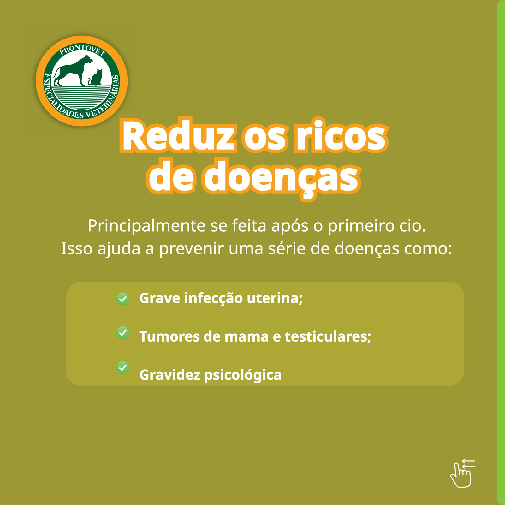

Imagens
Feed





25 anos de história, cuidado e dedicação aos pets — contados pela Pictures.
A ProntoVET é uma clínica veterinária com mais de 25 anos de atuação, reconhecida pelo cuidado, amor e dedicação aos pets. Ao longo de uma parceria de mais de 15 anos atendendo a marca, participamos da construção e fortalecimento do posicionamento digital da empresa.
Neste projeto, o objetivo foi comunicar a evolução da infraestrutura, o crescimento da equipe e celebrar o marco de 25 anos de história.

A comunicação foi pensada para reforçar a autoridade da ProntoVET no mercado veterinário de Curitiba:
Desenvolvimento do roteiro, direção criativa e construção da narrativa visual para cada peça produzida, com foco em:
O conjunto de peças produzidas gerou reconhecimento para a marca, reforçou seu posicionamento como referência no segmento veterinário e estreitou o relacionamento com clientes atuais e potenciais. A parceria de mais de 15 anos segue ativa, com a comunicação sempre evoluindo junto com a clínica.
Vamos conversar sobre como podemos transformar a comunicação do seu negócio.